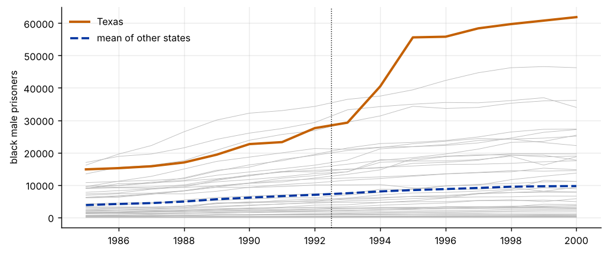
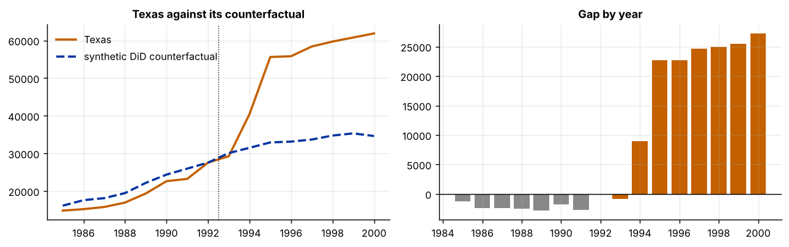
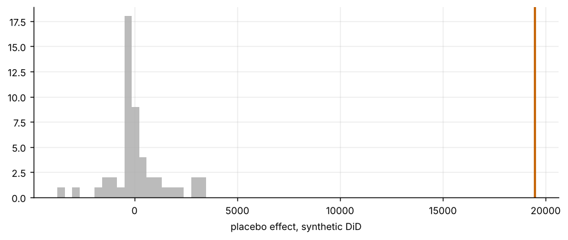

Step 1The question and the design
In 1993 Texas began a massive expansion of prison capacity. How many more black men were in Texas prisons after 1993 than there would have been without the expansion? This is the question of the synthetic control guide, with the same data (Cunningham, Causal Inference: The Mixtape), so that the estimators can be compared directly.
Plain difference-in-differences needs parallel trends with the average of all other states. Synthetic control builds a weighted average of states that matches Texas before 1993 and needs a good pre-treatment fit. Synthetic DiD uses both ideas. With \(\hat\omega_i\) the unit weights and \(\hat\lambda_t\) the time weights,
where \(\hat\omega\) makes the weighted controls follow the treated unit's pre-treatment path up to a constant (and are regularised so that they do not concentrate on one state), and \(\hat\lambda\) makes the weighted pre-treatment periods resemble the post-treatment period for the controls. The intercept freedom is what separates it from synthetic control.
| Symbol | Variable in the file | Definition |
|---|---|---|
| \(Y_{it}\) | bmprison |
black male prisoners in the state's prisons |
| \(D_{it}\) | expansion |
1 for Texas from 1993 |
| \(N_0,T_0\) | 50 comparison states and 8 pre-treatment years (1985–1992) |
Before you estimate anything
Check the three conditions behind the estimator: a long enough pre-period (here 8 years), enough comparison units whose weighted average can follow the treated unit, and no spillovers from Texas into the other states. State which weights you expect to matter before you see them. With one treated unit, inference cannot use cluster-robust standard errors, so use placebo or jackknife methods.
How to write it: design
We estimate the effect of the 1993 Texas prison expansion on the number of black male prisoners using synthetic difference-in-differences (Arkhangelsky et al. 2021), with the other 50 states as the comparison pool and 1985–1992 as the pre-treatment period. We compare the estimate with difference-in-differences and synthetic control. We obtain standard errors from placebo estimates in which each comparison state is assigned the treatment in turn.
Step 2Load the data and look at Texas against the other states
import warnings; warnings.filterwarnings("ignore")
import numpy as np, pandas as pd
import matplotlib.pyplot as plt
from scipy.optimize import minimize
d = pd.read_csv("texas.csv")
Y = d.pivot(index="state", columns="year", values="bmprison"); years = list(Y.columns)
tr = "Texas"; T0 = sum(y < 1993 for y in years); T1 = len(years) - T0
ctrl = [s for s in Y.index if s != tr]; N0 = len(ctrl)
print(f"{Y.shape[0]} states, {years[0]}-{years[-1]}; treated: {tr} from 1993 ({T0} pre-treatment and {T1} post-treatment years); {N0} comparison states")
print(f"Texas in {years[T0 - 1]}: {Y.loc[tr, years[T0 - 1]]:,.0f} | mean of the other states: {Y.loc[ctrl, years[T0 - 1]].mean():,.0f} | median: {Y.loc[ctrl, years[T0 - 1]].median():,.0f}")
fig, ax = plt.subplots(figsize=(8, 3.4))
for s_ in ctrl: ax.plot(years, Y.loc[s_], color="#bbb", lw=.5)
ax.plot(years, Y.loc[tr], color="#c46000", lw=2.2, label="Texas"); ax.plot(years, Y.loc[ctrl].mean(), color="#0033a0", lw=2, ls="--", label="mean of other states")
ax.axvline(1992.5, color="#000", lw=.8, ls=":"); ax.legend(frameon=False); ax.set_ylabel("black male prisoners"); plt.tight_layout()51 states, 1985-2000; treated: Texas from 1993 (8 pre-treatment and 8 post-treatment years); 50 comparison states Texas in 1992: 27,568 | mean of the other states: 6,972 | median: 3,101

How to read it
Texas was already far above the rest: 27,568 prisoners in 1992 against an average of 6,972 for the other states (median 3,101). The gap is a level difference, not a trend difference, which is exactly what the difference-in-differences family allows. Because a handful of large states dominate the pool, simple averages of controls are a poor comparison.
Step 3Difference-in-differences and synthetic control on the same data
Yc = Y.loc[ctrl].values; yt = Y.loc[tr].values
did = (yt[T0:].mean() - yt[:T0].mean()) - (Yc[:, T0:].mean() - Yc[:, :T0].mean())
def simplex(A, b, ridge, intercept):
"""minimise ||A w + c - b||^2 + ridge * ||w||^2 over weights w >= 0 summing to one (and a free constant c if intercept)."""
n = A.shape[1]
def f(x):
r = A @ x[:n] + (x[n] if intercept else 0) - b; return r @ r + ridge * (x[:n] @ x[:n])
x0 = np.r_[np.ones(n) / n, 0.0] if intercept else np.ones(n) / n
r = minimize(f, x0, method="SLSQP", bounds=[(0, 1)] * n + ([(None, None)] if intercept else []),
constraints=[{"type": "eq", "fun": lambda x: x[:n].sum() - 1}], options={"maxiter": 1000, "ftol": 1e-12})
return r.x[:n]
def synth_control(Yc, yt, T0, scale):
w = simplex(Yc[:, :T0].T / scale, yt[:T0] / scale, 0.0, False)
return (yt[T0:] - w @ Yc[:, T0:]).mean(), w
sc_est, w_sc = synth_control(Yc, yt, T0, 1000.0)
print(f"Difference-in-differences (all 50 states equally weighted): {did:,.0f} more prisoners per year")
print(f"Synthetic control: {sc_est:,.0f}")
print("Synthetic control weights:", {ctrl[i]: round(float(w_sc[i]), 3) for i in np.argsort(-w_sc)[:5]})
print(f"Pre-treatment fit of the synthetic control: root mean squared error {np.sqrt(np.mean((yt[:T0] - w_sc @ Yc[:, :T0]) ** 2)):,.0f}")Difference-in-differences (all 50 states equally weighted): 29,780 more prisoners per year
Synthetic control: 21,013
Synthetic control weights: {'Florida': 0.373, 'New York': 0.355, 'Illinois': 0.272, 'California': 0.0, 'Oregon': 0.0}
Pre-treatment fit of the synthetic control: root mean squared error 863How to read it
Plain DiD gives about 29,800 more prisoners a year, but it compares Texas with the average state, which is much smaller and may follow a different path. Synthetic control puts its weight on Florida, New York and Illinois (about 0.37, 0.36 and 0.27) and gives about 21,000, with a pre-treatment root mean squared error of 863. The 9,000 gap between the two is a warning that the parallel-trends assumption with the average state is not credible here.
Step 4Synthetic difference-in-differences
def sdid(Yc, yt, T0, zeta_mult=1.0):
N0_, T_ = Yc.shape; T1_ = T_ - T0
sig = np.std(np.diff(Yc[:, :T0], axis=1)) # noise level of the controls
zeta = zeta_mult * (1 * T1_) ** .25 * sig # regularisation of the unit weights
s = sig
om = simplex(Yc[:, :T0].T / s, yt[:T0] / s, (zeta / s) ** 2 * T0, True) # unit weights, with a free intercept
lam = simplex(Yc[:, :T0] / s, Yc[:, T0:].mean(1) / s, (1e-6) ** 2 * N0_, True) # time weights, with a free intercept
t_post, t_pre = yt[T0:].mean(), lam @ yt[:T0]
c_post, c_pre = om @ Yc[:, T0:].mean(1), om @ (Yc[:, :T0] @ lam)
tau = (t_post - t_pre) - (c_post - c_pre)
gap_t = (yt - lam @ yt[:T0]) - (om @ Yc - c_pre) # year-by-year effect: treated minus its synthetic path, both relative to weighted pre-treatment level
return tau, om, lam, gap_t
tau, om, lam, gap_t = sdid(Yc, yt, T0)
print(f"Synthetic DiD estimate: {tau:,.0f} more prisoners per year after 1993")
print("Largest unit weights:", {ctrl[i]: round(float(om[i]), 3) for i in np.argsort(-om)[:6]}, f"| effective number of states {1 / np.sum(om ** 2):.1f}")
print("Time weights (1985-1992):", dict(zip(years[:T0], lam.round(3))))
print("Year-by-year effects:", dict(zip(years[T0:], gap_t[T0:].round(0).astype(int))))
print("Pre-treatment gaps (should be close to zero):", dict(zip(years[:T0], gap_t[:T0].round(0).astype(int))))
fig, ax = plt.subplots(1, 2, figsize=(10, 3.2))
ax[0].plot(years, yt, color="#c46000", lw=2, label="Texas"); cf = om @ Yc + (yt[:T0] @ lam - om @ (Yc[:, :T0] @ lam))
ax[0].plot(years, cf, color="#0033a0", lw=2, ls="--", label="synthetic DiD counterfactual"); ax[0].axvline(1992.5, color="#000", lw=.8, ls=":"); ax[0].legend(frameon=False); ax[0].set_title("Texas against its counterfactual")
ax[1].bar(years, gap_t, color=["#888"] * T0 + ["#c46000"] * T1); ax[1].axhline(0, color="#000", lw=.8); ax[1].set_title("Gap by year")
plt.tight_layout()Synthetic DiD estimate: 19,477 more prisoners per year after 1993
Largest unit weights: {'Florida': 0.332, 'Illinois': 0.301, 'New York': 0.226, 'Ohio': 0.114, 'Michigan': 0.015, 'California': 0.013} | effective number of states 3.8
Time weights (1985-1992): {1985: np.float64(0.0), 1986: np.float64(0.0), 1987: np.float64(0.0), 1988: np.float64(0.0), 1989: np.float64(0.0), 1990: np.float64(0.0), 1991: np.float64(0.0), 1992: np.float64(1.0)}
Year-by-year effects: {1993: np.int64(-833), 1994: np.int64(8950), 1995: np.int64(22677), 1996: np.int64(22669), 1997: np.int64(24701), 1998: np.int64(24955), 1999: np.int64(25460), 2000: np.int64(27238)}
Pre-treatment gaps (should be close to zero): {1985: np.int64(-1306), 1986: np.int64(-2391), 1987: np.int64(-2349), 1988: np.int64(-2520), 1989: np.int64(-2819), 1990: np.int64(-1747), 1991: np.int64(-2726), 1992: np.int64(0)}
How to read it
Synthetic DiD gives about 19,500 more prisoners a year, close to synthetic control and well below DiD. The unit weights go to Florida (0.33), Illinois (0.30), New York (0.23) and Ohio (0.11), an effective number of 3.8 states. The time weights put all the mass on 1992, so the estimate is effectively a comparison of the post-period with the last pre-period. The effect is about zero in 1993, is 9,000 in 1994 and reaches 22,000–27,000 from 1995, which is consistent with prison capacity being built up gradually. The pre-treatment gaps (about −1,300 to −2,800) are measured relative to 1992, so they show that Texas was growing less fast than its synthetic path before the policy rather than a fit failure; the estimator allows for the level difference but not for that drift.
Step 5Inference: placebo estimates
scale = 1000.0
def three(Yc_, yt_, T0_):
d_ = (yt_[T0_:].mean() - yt_[:T0_].mean()) - (Yc_[:, T0_:].mean() - Yc_[:, :T0_].mean())
return d_, synth_control(Yc_, yt_, T0_, scale)[0], sdid(Yc_, yt_, T0_)[0]
plac = np.array([three(np.delete(Yc, k, 0), Yc[k], T0) for k in range(N0)]) # each comparison state in turn plays Texas
est = np.array([did, sc_est, tau])
tab = pd.DataFrame({"estimate": est, "placebo s.e.": plac.std(0, ddof=1), "placebo mean": plac.mean(0)}, index=["DiD", "synthetic control", "synthetic DiD"])
tab["t"] = tab.estimate / tab["placebo s.e."]
tab["share of placebos with |effect| >= Texas"] = [(np.abs(plac[:, j]) >= abs(est[j])).mean() for j in range(3)]
print(tab.round(2).to_string())
print(f"\nSynthetic DiD 95% interval (estimate +/- 1.96 placebo s.e.): [{tau - 1.96 * plac[:, 2].std(ddof=1):,.0f}, {tau + 1.96 * plac[:, 2].std(ddof=1):,.0f}]")
fig, ax = plt.subplots(figsize=(7.5, 3.2))
ax.hist(plac[:, 2], bins=20, color="#bbb"); ax.axvline(tau, color="#c46000", lw=2); ax.set_xlabel("placebo effect, synthetic DiD"); plt.tight_layout()estimate placebo s.e. placebo mean t share of placebos with |effect| >= Texas DiD 29779.76 4189.83 -0.00 7.11 0.0 synthetic control 21013.19 1658.10 158.49 12.67 0.0 synthetic DiD 19477.12 1335.63 108.32 14.58 0.0 Synthetic DiD 95% interval (estimate +/- 1.96 placebo s.e.): [16,859, 22,095]

How to read it
Treating each of the 50 comparison states as if it had been treated gives a placebo standard error of about 1,340 for synthetic DiD, against 1,660 for synthetic control and 4,190 for DiD. No placebo effect is as large as the Texas estimate (a share of 0 out of 50, so the placebo p-value is at most 1/51 = 0.02), and the interval is about 16,900 to 22,100. The placebo mean is 108, close to zero. With one treated unit these are approximate, and the placebo states are smaller than Texas, so their spread is probably understated for a state of Texas's size.
Step 6Robustness: regularisation, an in-time placebo and the scale of the outcome
rows = []
for mult in [.25, 1, 4, 16]:
t_, o_, l_, _ = sdid(Yc, yt, T0, mult)
rows.append((f"regularisation x {mult:g}", t_, 1 / np.sum(o_ ** 2), l_.max()))
print(pd.DataFrame(rows, columns=["specification", "SDID estimate", "effective number of states", "largest time weight"]).round(2).to_string(index=False))
# in-time placebo: pretend treatment began in 1989 and use only the pre-treatment years
T0f = sum(y < 1989 for y in years)
Yp, ytp = Yc[:, :T0], yt[:T0]
t_f, _, _, _ = sdid(Yp, ytp, T0f)
print(f"\nIn-time placebo (treatment moved to 1989, data up to 1992): {t_f:,.0f} (the true effect is zero by construction)")
print(f"Pre-treatment spread: standard deviation of the year-to-year change of the average control {np.std(np.diff(Yc[:, :T0].mean(0))):,.0f}")
# log outcome: proportional effect
keep = [s_ for s_ in ctrl if (Y.loc[s_] > 0).all()] # Vermont reports zero prisoners in some years
Ylog = np.log(Y.loc[keep].values); ytl = np.log(Y.loc[tr].values)
tl, ol, _, _ = sdid(Ylog, ytl, T0)
dl = (ytl[T0:].mean() - ytl[:T0].mean()) - (Ylog[:, T0:].mean() - Ylog[:, :T0].mean())
print(f"\nLog outcome ({len(keep)} states with positive counts): SDID {tl:.3f} (about {100 * (np.exp(tl) - 1):.0f}% more prisoners), DiD {dl:.3f}")
print("Largest unit weights in logs:", {keep[i]: round(float(ol[i]), 3) for i in np.argsort(-ol)[:4]}) specification SDID estimate effective number of states largest time weight
regularisation x 0.25 19008.15 1.97 1.0
regularisation x 1 19477.12 3.77 1.0
regularisation x 4 20245.68 12.16 1.0
regularisation x 16 22436.58 40.32 1.0
In-time placebo (treatment moved to 1989, data up to 1992): 4,146 (the true effect is zero by construction)
Pre-treatment spread: standard deviation of the year-to-year change of the average control 132
Log outcome (49 states with positive counts): SDID 0.293 (about 34% more prisoners), DiD 0.401
Largest unit weights in logs: {'Maine': 0.061, 'Washington': 0.049, 'Tennessee': 0.044, 'Wisconsin': 0.043}How to read it
Making the unit weights more concentrated or more spread out moves the estimate between about 19,000 (effective number of states 2) and 22,400 (40 states), so the conclusion does not depend on the regularisation, but the size does. The in-time placebo, which pretends that treatment began in 1989 and uses only pre-1993 data, finds 4,100, about a fifth of the main effect. That is larger than the year-to-year noise of the controls (132), so some of the main estimate may reflect Texas's pre-existing faster growth, and it should be reported as a limit. In logs, dropping Vermont (which has zero prisoners in some years), the estimate is 0.29 (about 34% more prisoners) against 0.40 from DiD; the weights are then spread thinly over many small states, so the levels and logs answer different questions.
How to write it: results
The synthetic difference-in-differences estimate is that the 1993 expansion raised the number of black male prisoners in Texas by about 19,500 a year over 1993–2000 (placebo 95% interval 16,900 to 22,100), a rise of roughly 34% in logs. This is close to the synthetic control estimate (21,000) and much smaller than the difference-in-differences estimate (29,800), which compares Texas with a very different average state. The effect builds up over time, from about zero in 1993 to 27,000 in 2000. Placebo estimates from the 50 other states are never as large. An in-time placebo of 4,100 and the dependence on the regularisation (19,000 to 22,400) suggest some residual uncertainty about the exact size.
Step 7What to report in the paper
| Item | What to show |
|---|---|
| Design | treated unit(s), comparison pool, pre- and post-period lengths |
| Weights | the largest unit weights, the time weights and the effective number of units |
| Comparison | DiD and synthetic control on the same data, so that readers see what the estimator changes |
| Fit | the pre-treatment gaps of the synthetic DiD counterfactual |
| Inference | placebo or jackknife standard errors (with a single treated unit), and the number of placebos |
| Robustness | regularisation, an in-time placebo, the outcome scale |
Common mistakes
- Using DiD standard errors with one treated unit. There is nothing to average over. Use placebo or jackknife inference.
- Reading unit weights as causal. They are a tool to build a counterfactual, and they can be unstable. Show the effective number of units.
- Forgetting that weights concentrate. Time weights often land on the last pre-period. If so, the estimate is close to a comparison with that one year, and you should say so.
- Ignoring scale. In levels, large units dominate. Check a log or per-capita version.
- Choosing the regularisation after seeing the result. Use the default rule, and show the sensitivity.
- Ignoring spillovers. If the treatment affects the comparison states, the counterfactual is contaminated.